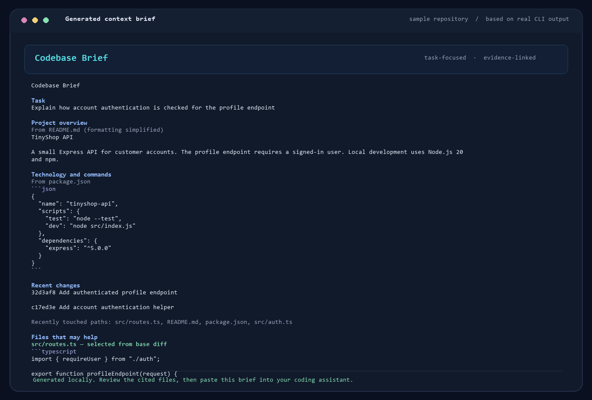

Give it a repo and task
For example: “Find where login errors are handled.” Git history can help prioritize recent changes.
Codebase Brief reads your local project, suggests files for the task, and gives you a short brief to review and paste into ChatGPT, Claude, or another browser-based coding chat. It shows why files were picked; you decide what to share.
Open source · Python 3.10+ · runs locally · no AI account or upload
# Install once $ pipx install codebase-brief # Make a brief for a task $ brief . --task "Trace the login flow" # Review the suggested files, then paste $ brief . --task "Trace the login flow" --copy
It gathers a useful starting point. You review the file suggestions before anything goes to your assistant.
For example: “Find where login errors are handled.” Git history can help prioritize recent changes.
See why each file was suggested. Keep, remove, or add files before building the brief.
Give your browser-based assistant source excerpts and paths it could not read from your computer.
The brief is compact and source-linked, so you can verify the context instead of trusting a mystery score.

Then share what you kept, removed, or added—and whether the brief helped your assistant.